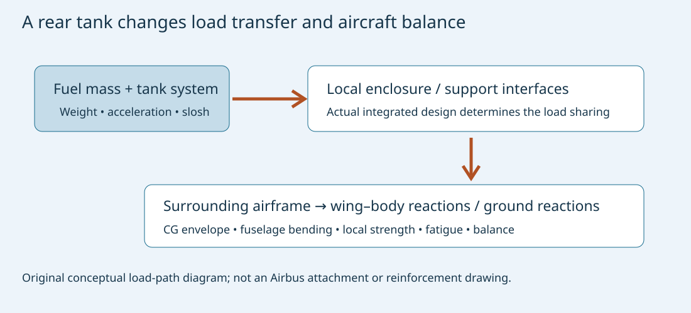
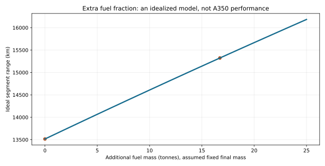

MIE 446 · Aerospace Structures · UMass Amherst
Original engineering case study · Sources checked 11 November
2026
Course readings · Illustrated web edition · BeamLab
The supplied Zoomit URL contains a Skyreach drone slug, but its retrieved title and article describe Airbus A350-1000ULR and Qantas Project Sunrise. The aircraft discussed here is the A350, not a Skyways V3 or a supposed V350. The comparison is with the baseline A350-1000, not with the shorter A350-900 or the separate -900ULR derivative.
Guinness records a Melbourne–Toulouse flight of 23,155.6 km, completed over 27–28 July 2026 in 24 h 24 min. Airbus announced recognition on 9 November 2026 and identifies this as an Airbus-operated test mission with 13 people aboard. It was not a scheduled flight carrying the planned 238-passenger commercial load. The recorded route length is not the cities’ shortest great-circle separation. [1,2]
Airbus’s earlier July account gives a preliminary 12,460 nm, whereas the November announcement and record page give 12,503 nm. This reading uses the later formal record for distance and the detailed engineering account for systems information. As of the November announcement, first delivery was planned for April 2027; a record flight does not by itself establish unrestricted commercial readiness. [1,2,4]
Figure 1. Airbus’s published ULR modification infographic, © Airbus, linked from its engineering overview [3]. It identifies an aft-fuselage Rear Centre Tank, higher takeoff weight and cabin/cooling changes. This external illustration is not an internal stress drawing.
| Item | Baseline-to-ULR change supported by the sources | What this does not establish |
|---|---|---|
| Fuel storage | An additional Rear Centre Tank (RCT) integrated into the aft fuselage structure [3,4] | A tank added at a wing tip, a new wing, or a disclosed attachment drawing |
| Additional capacity | Approximately 20,000 L in public summaries; 20,900 L in Airbus’s detailed July account [3,4] | Two separate tanks with these capacities |
| Fuel system | Revised transfer architecture and management, with pumps, indication and pressure functions tested [3] | A publicly disclosed complete transfer schedule |
| Allowable takeoff mass | Increased maximum takeoff weight is stated [3] | A universal numeric increment independent of weight variant |
| Propulsion | Two Trent XWB-97 engines, also used on the baseline -1000 [6,7] | A newly invented engine, larger fan or confirmed ULR-only thrust increase |
| Galley cooling | New Generation Air Chiller (NGAC), with approximately 300 kg system-level saving reported [3,5] | A 300 kg reduction in the complete aircraft’s empty mass after all ULR modifications |
| Cabin and crew accommodation | 238 seats; a Wellbeing Zone; a new twin flight-crew rest module [4,8] | Equivalent payload between the record mission and airline operation |
Important source limit: the news article says the centre wing structure and landing gear were strengthened and the engines optimized for long-duration lower-thrust operation. The official sources checked here confirm a major RCT structural modification, fuel-system changes and increased takeoff weight, but do not provide enough detail to establish those particular reinforcement or engine-redesign claims. They are therefore not presented as verified changes.
The public baseline product page is itself updated as weight variants develop. Its current figures should not be subtracted from an older variant’s figures and labeled the ULR-specific increase. Exact certified limits require the applicable aircraft configuration and approved documentation. [7]
The baseline A350 already uses substantial composite structure: Airbus identifies 53% composite content for the family [7]. This is inherited platform technology, not evidence of a new ULR-only material change. A carbon-fibre airframe still needs local load introduction, joint design, buckling and damage-tolerance assessment.
Adding fuel changes mass, mass location and load transfer, not only volume. A preliminary estimate using the explicitly assumed fuel density \(\rho_f=0.80\,\mathrm{kg/L}\) gives
\[m_f=\rho_f V_f=0.80(20{,}900)=16{,}720\,\mathrm{kg}.\]
That is 16.72 tonnes of fuel at the assumed density. It excludes the tank installation, plumbing, pumps, protection and other hardware, and is not a published installed-system mass. Usable quantity and operational filling restrictions need not equal geometric capacity.
At an illustrative vertical load factor \(n=2\), its equivalent inertial load magnitude is
\[F=n m_f g\approx328\,\mathrm{kN}.\]
This is a classroom load case, not an A350 qualification load. The load must reach the primary airframe through the tank enclosure or supports and the surrounding structural interfaces. Actual sharing depends on the integrated design. It is not valid to divide the load equally between an invented number of brackets and call that a verified design.
For a conventional aircraft shell model, frames, stiffeners, skin and floor structures redistribute concentrated and distributed loads. A tank installation must be assessed for local bearing, shear, bending, buckling, fatigue and damage tolerance, as appropriate to its actual construction. These are engineering consequences of integrating a heavy fluid mass; they are not a claim that Airbus published a particular new frame or laminate schedule.

Figure 2. Original teaching schematic. Arrows show required functional load transfer, not the proprietary A350 attachment arrangement.
For aircraft components at longitudinal coordinates \(x_i\),
\[x_{CG}=\frac{\sum_i m_i x_i}{\sum_i m_i}.\]
An extra tank aft of the original centre of gravity shifts the combined CG aft when filled. As it empties or transfers fuel to other tanks, the aircraft’s mass distribution changes again. An allowable takeoff CG is not sufficient: loading, climb, cruise, diversion and landing states must remain acceptable.
For a generic aircraft of mass \(M\) and CG \(x_0\), with added fuel \(m\) at \(x_t\),
\[\Delta x_{CG}=\frac{m(x_t-x_0)}{M+m}.\]
If assumed \(M=300\) tonnes, \(m=16.72\) tonnes and the tank fuel centroid is assumed 15 m aft of \(x_0\), the shift is approximately 0.792 m aft. These are not A350 tank-station or operating-mass data. The example demonstrates why placement and management matter. A real CG envelope is commonly expressed relative to mean aerodynamic chord, which also requires the aircraft’s reference geometry.
Tail force and elevator trim respond to the required pitching-moment balance. Their effect on total drag is configuration-dependent; aft CG is not automatically a free efficiency gain. Stability margin, control authority, structural loads and certification requirements constrain the usable balance range.
Airbus identifies fuel-transfer sequencing as a tested function. It is reasonable engineering analysis that such sequencing must be evaluated together with balance and loads; the cited material does not disclose the operational control law. [3]
The wing carries upward aerodynamic lift while its own structure, engines and wing fuel generate downward inertial loads in a positive-g maneuver. Wing fuel can therefore provide bending relief. Fuel carried near the aircraft centreline increases the supported aircraft weight without providing the same outboard relief.
For one semispan \(\ell\) and spanwise coordinate \(y\), a simplified positive-g beam model is
\[q_{\rm net}(y)=l(y)-ng[\mu_s(y)+\mu_f(y)],\]
\[M_{\rm root}=\int_0^\ell yq_{\rm net}(y)\,dy-\sum_j y_j n m_j g.\]
Here \(l\) is lift per unit span, \(\mu_s\) structural mass per unit span, \(\mu_f\) wing-fuel mass per unit span, and the sum represents separate concentrated masses. Do not count a mass in both the distributed and concentrated terms. The fuselage and its fuel enter the total lift requirement and wing–body reactions, not an invented outboard point load.
At fixed total aircraft mass and prescribed lift distribution, compare 16.72 tonnes of fuel in a centreline installation with the same mass split between the wings at an assumed 10 m spanwise arm. Moving it from the wings to the centreline removes a relief moment of
\[\Delta M_{\rm root}=n\frac{m_f}{2}g(10\,\mathrm m) \approx0.820\,\mathrm{MN\,m}\quad(n=1)\]
on each wing. This comparison isolates fuel location, not the actual A350 tank layout. If fuel is added without removing other mass, the lift distribution also changes and must be recomputed.
A first stress estimate uses \(\sigma_x=Mz/I\). Wing-box torsion, shear flow and panel buckling also matter; for a single-cell thin-walled closed section, \(q_s=\mathcal T/(2A_m)\) under ideal Saint-Venant torsion. Neither that expression nor a one-dimensional beam establishes a real composite wing’s margins.
This is why the educational answer is more precise than “a stronger wing.” The revised mass envelope must be analyzed across the aircraft, while the public sources do not specify which baseline components retain margin and which require physical changes.
More permitted takeoff mass can affect taxi loads, gear reactions, takeoff performance and rejected-takeoff brake energy. But higher MTOW does not imply the aircraft normally lands at that mass. Much fuel is consumed before arrival; maximum landing mass is a separate limit.
For a deliberately simplified two-main-gear reaction model, with a main-gear-supported mass fraction \(\beta\),
\[R_{\rm main,each}\approx\frac{\beta Mg}{2}.\]
The actual multibogie load distribution, CG position, runway irregularities, dynamic effects and nose-gear share require a more complete model. For stopping energy, the kinetic-energy scale is \(E_k=MV^2/2\); not all of it necessarily enters the wheel brakes. Tire limits, brake temperatures and rejected-takeoff scenarios must be checked explicitly.
These are reasons to reassess landing-gear and braking capability. They do not prove that Airbus fitted a newly designed gear, stronger struts or larger brakes specifically for ULR. The public engineering sources used here do not disclose that hardware comparison.
A fuel system must work while the aircraft accelerates, changes attitude and consumes fuel. For a quasi-static fluid depth \(h\) along an effective acceleration,
\[\Delta p\approx\rho_f g_{\rm eff}h.\]
At assumed \(\rho_f=800\) kg/m³, \(h=2\) m and \(g_{\rm eff}=g\), the pressure difference is about 15.7 kPa. This is an acceleration-induced fluid pressure difference, not cabin differential pressure or a specified tank design pressure. Real venting, pressure-control and external conditions also matter.
A partially filled tank can slosh. Fluid motion changes loads and transient moments, and can affect pickups and gauging. Baffles or other design provisions must be evaluated where used; the actual RCT’s internal arrangement is not established by the published infographic. Added tank volume also creates requirements for drainage, thermal behavior, flammability protection, leak management and reliable transfer.
Airbus describes instrumenting the new tank for flow, temperature and oxygen concentration. That is evidence of what was measured; the complete protection-system design is not provided. [5]
The ULR uses the same Trent XWB-97 engine model as the baseline -1000. Rolls-Royce discusses its long-haul reliability and efficiency, but the reviewed announcement does not give a ULR-specific new thrust rating or fuel-consumption improvement. A reduced thrust requirement late in a flight is a consequence of lower aircraft weight, not evidence of a different engine design. [6,7]
A simplified steady-level-flight model has
\[L\approx W,\qquad T\approx D,\qquad C_D=C_{D0}+kC_L^2.\]
At fixed density, speed and wing area,
\[D_i=\frac{2kW^2}{\rho V^2S}.\]
Consequently, carrying extra fuel increases induced drag while it is aboard. An aircraft spends some fuel transporting its remaining fuel. Changing altitude and speed as weight decreases can improve the mission, within operating and air-traffic limits.
For a jet, a simplified Breguet range relation is
\[R=\frac{V}{c_T}\frac{L}{D}\ln\left(\frac{W_i}{W_f}\right),\]
where \(c_T=\dot W_f/T\) has units of inverse time and \(W_i,W_f\) are segment boundary weights. This convention must not be mixed with mass-flow-per-thrust without the appropriate gravitational conversion. The ideal formula assumes constant speed, lift-to-drag ratio and specific fuel consumption; real mission planning integrates changing performance and reserves.
For illustrative \(V=250\) m/s, \(c_T=0.00015\) s\(^{-1}\) and \(L/D=20\), changing a mass ratio from \(300/200\) to \(316.72/200\) increases the ideal segment range from about 13,516 km to 15,323 km. This is not an A350 range reconstruction: installed-tank mass, actual drag and engine maps, payload, climb and reserves are excluded. It demonstrates why extra fuel fraction can improve range without improving basic engine efficiency.

Figure 3. Original Breguet-model illustration with explicitly assumed parameters. No point is an A350 flight-test measurement.
Qantas specifies 238 seats: six First, 52 Business, 40 Premium Economy and 140 Economy, plus a dedicated movement area. A lower seat count can reduce passenger and baggage mass, but premium seats, extra catering and rest facilities also have mass. Seat-count reduction is not a direct measurement of the net payload saving. [8]
Airbus identifies a new twin flight-crew rest module [4]. Ultra-long missions also require reliable ventilation, food refrigeration, water, waste capacity and crew arrangements. Human endurance and aircraft fuel endurance are separate constraints.
The NGAC uses local galley cooling in place of the baseline centralized arrangement. Airbus reports an approximately 300 kg cooling-system saving [3,5]. Less system mass can support fuel or payload, but this saving cannot be subtracted from all new tank-system mass without a complete weight statement.
Airbus distinguishes the July long flight as development testing from the wider certification program [4]. It also describes approximately five tonnes of monitoring equipment and over a thousand sensors for the instrumented airframe [5]. These are test-installation facts, not the intended passenger-service equipment load.
A demonstration of more than 24 hours airborne supports continuous-operation evidence. It does not by itself prove every diversion, loading, failure and environmental case needed for airline operation. Likewise, 23,155.6 km with a test crew must not be advertised as a full-passenger scheduled range.
The strongest verified engineering answer is therefore: an integrated aft fuel-storage modification, associated fuel controls, higher allowed takeoff mass, revised cooling and mission-specific accommodation extend the baseline platform’s capability. Detailed reinforcement drawings, stress margins and proprietary engine schedules remain unavailable in the cited material.
Use a generic equivalent semispan, not an Airbus structural model.
Submit a free-body diagram, shear/moment plots and a short statement separating source-confirmed modifications from your model assumptions. This is optional course enrichment, not a new grading requirement.
Sources accessed 11 November 2026. Bracketed numbers identify aircraft-specific evidence. All structural/fluid/performance calculations above are original idealized teaching analysis; their stated inputs are not proprietary aircraft data.
Theory background: T. H. G. Megson, Aircraft Structures for Engineering Students (load paths, bending and thin-walled structures); J. D. Anderson, Introduction to Flight (aircraft performance); Breguet’s relation and the balance/beam models are explicitly defined above. No reproduction of textbook figures is included.